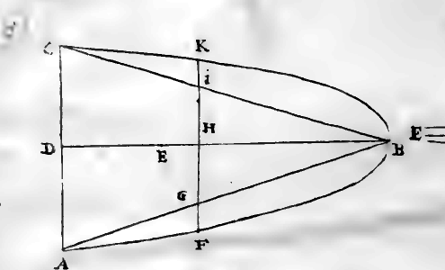

Proposition XIV: Center of Gravity of a Parabolic Conoid (2:1)¶


Proposition XIV · Theorem XIV (pp. 78–79, Tab. 10, Fig. 81)
The center of gravity :g:`E` of any portion of a **parabolic conoid* (paraboloid of revolution ABC) divides its axis BD so that the portion toward vertex B is double the portion toward base D:*
$$\overline{BE} : \overline{ED} = 2 : 1.$$
Citing Apollonius (Conics I.22) and Evangelista Torricelli (De dimensione parabolae, Lemma 22), Ceva inscribes the axial triangle $\triangle ABC$: at every height $H$ along axis $BD$, the area of the circular slice of the paraboloid scales linearly with $BH$, just as the chord length $GI$ of $\triangle ABC$ scales linearly with $BH$! Because corresponding slices along the lever axis $BD$ stand in constant ratio, the 3D paraboloid shares the exact same center of gravity E ($2 : 1$) as the 2D triangle $\triangle ABC$!
f. 0096 · p. 79